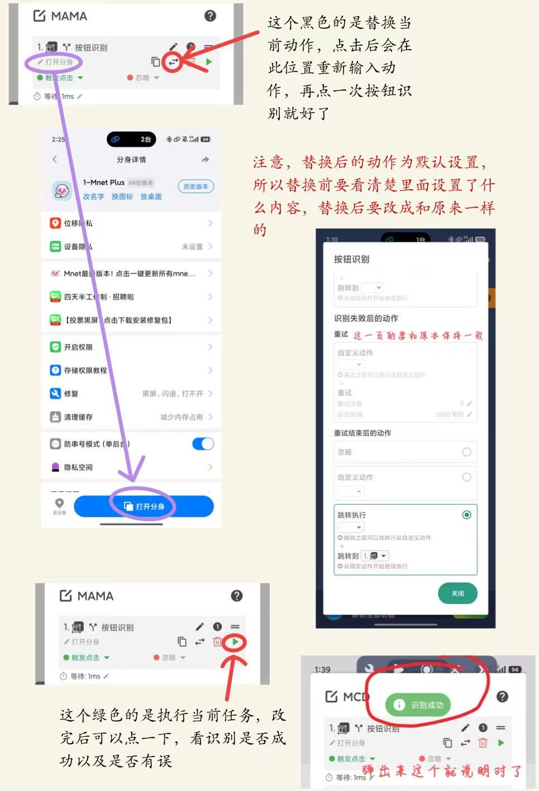
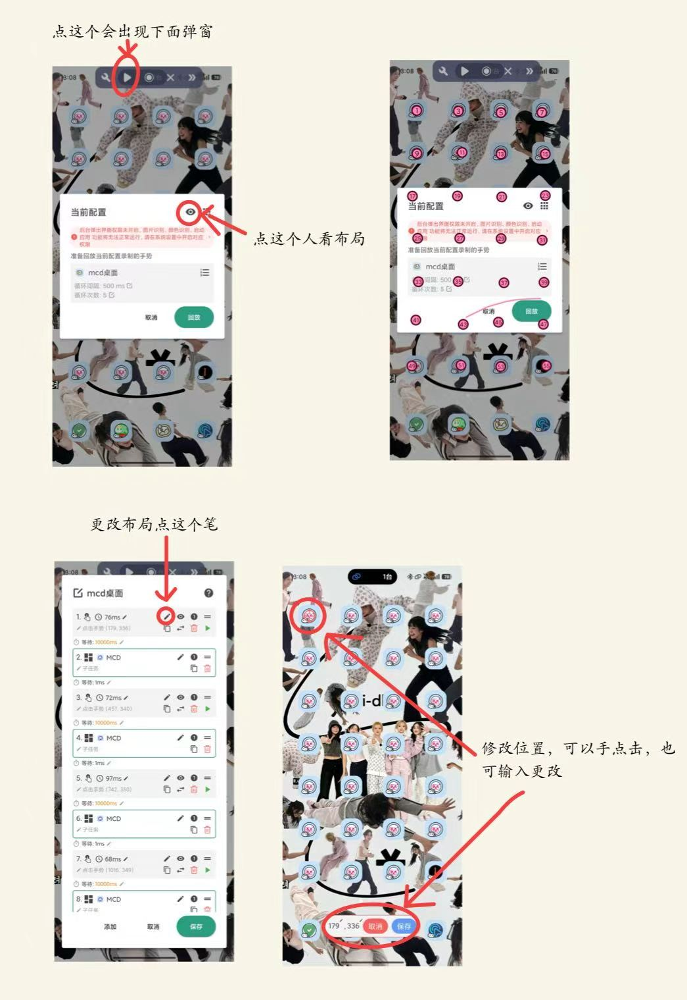
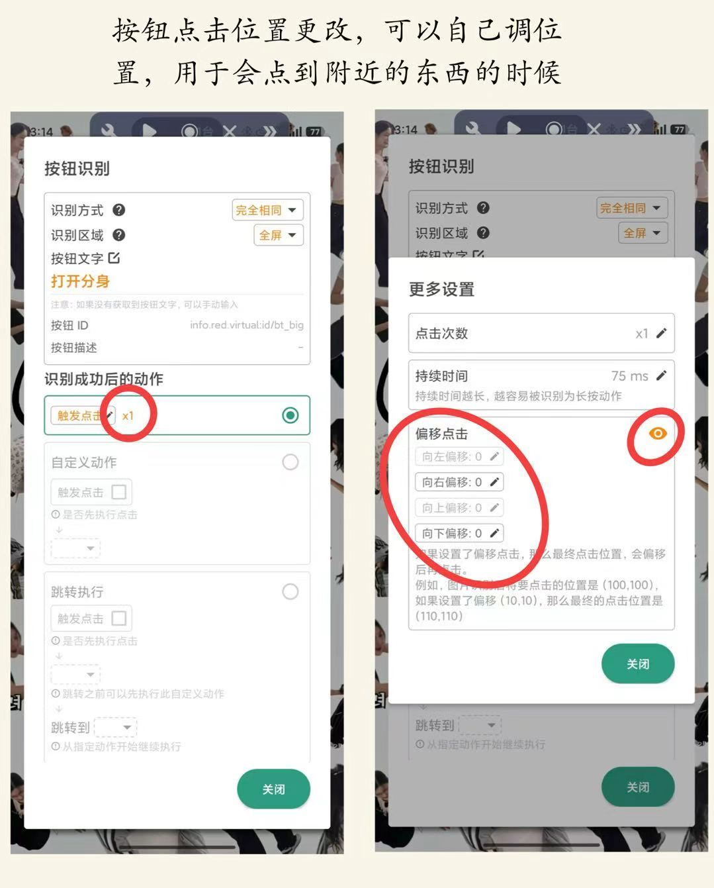
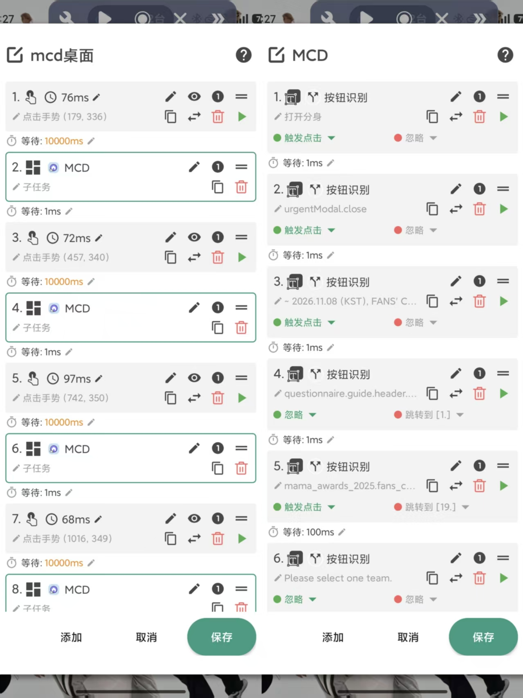
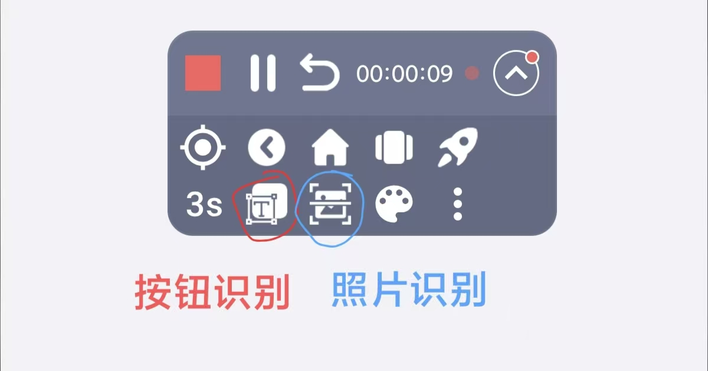
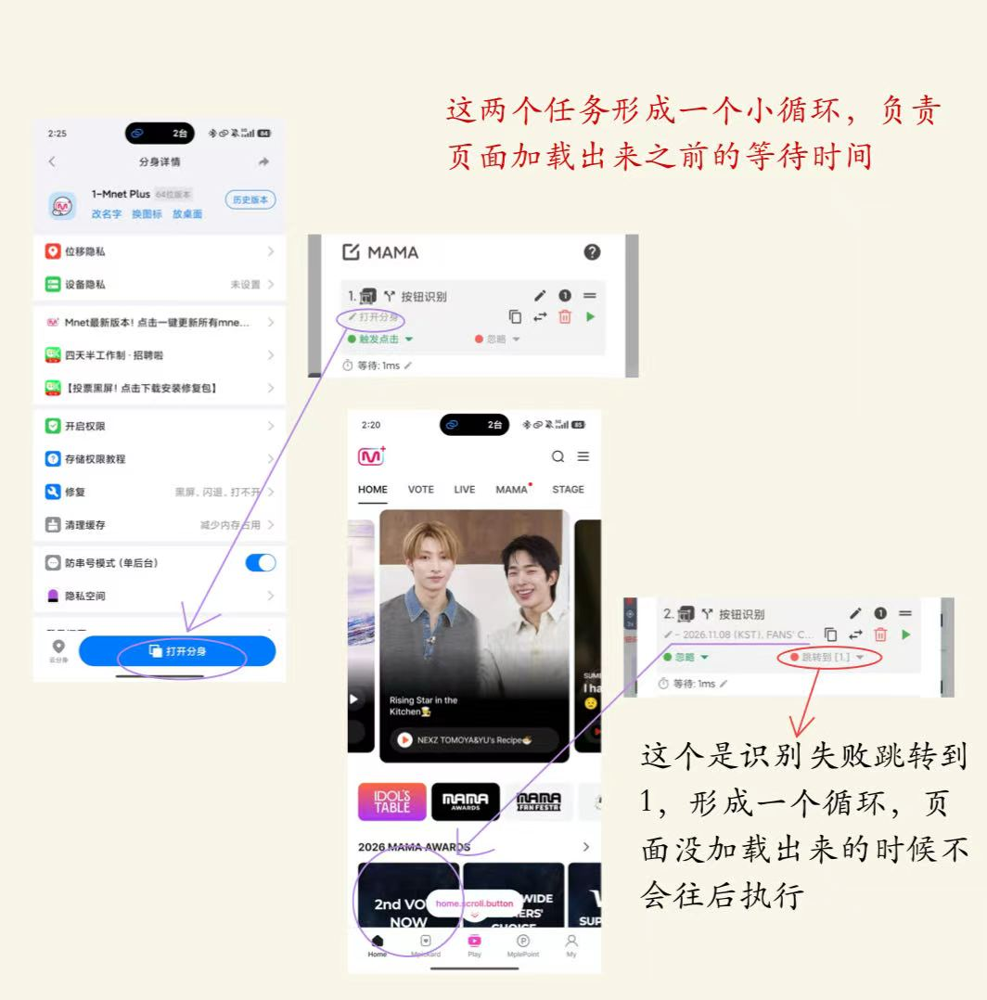
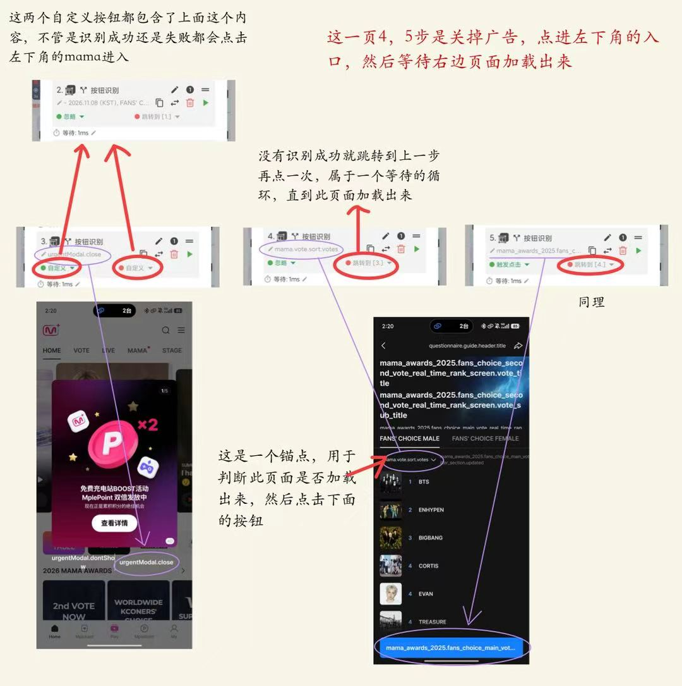
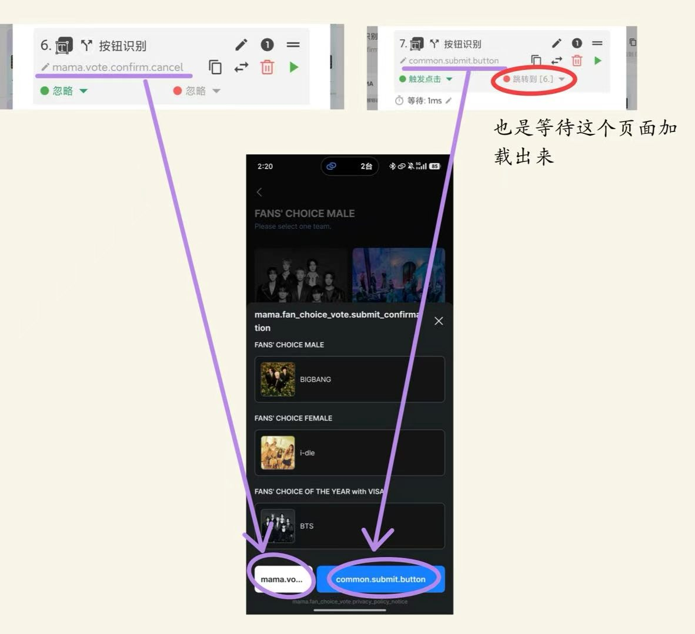
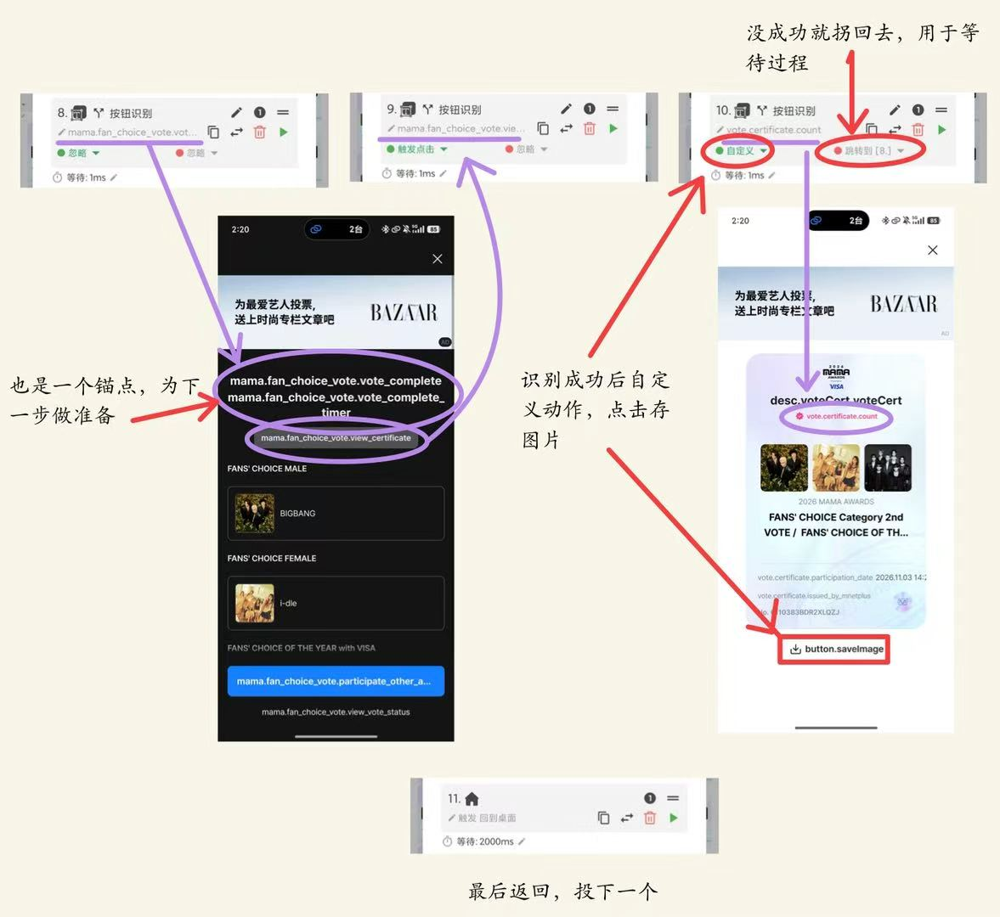

点击器分两种思路：1.用别人的（嫌麻烦的可以） 2.自己做（学会了干什么都可以自己做，方便）
用拦截器拦截小广告（必须要下，没有的找群里人要）
以下是本次的两个可用脚本，复制在贝利点击器里点击新建任务，导入就行
投过票的版本：（这个版本里的第三个步骤，套有新的步骤，注意一下，详细介绍在下面）
【MAMA2026（主）】 [2552BD7B64205C43E09B5A5DDDDE43278A76B3D1D041B00C1EDF410DFF31E73ACF6D7EE7FD0D89785B9A7A382B9142A026699593EA43D2F5CB5896AAE6DF6A523C26DADB14A428643DDC190E27E4DC90] 复制任务分享口令，然后在配置列表中，点击创建任务按钮，再点击导入分享任务按钮，粘贴进去，就可以快速导入这个任务 下载地址：https://a.app.qq.com/o/simple.jsp?pkgname=com.ksxkq.autoclick
包含投过，没投过以及跳过当天已投号：
【mcd桌面】【相册】 [2552BD7B64205C43E09B5A5DDDDE43278A76B3D1D041B00C1EDF410DFF31E73A0053D6CBC1786FBA95177A2889C8CABB6BA52A286550C523B6C72711D3750EDE42B646C08C491D3FC471338AB916E64C] 复制任务分享口令，然后在配置列表中，点击创建任务按钮，再点击导入分享任务按钮，粘贴进去，就可以快速导入这个任务 下载地址：https://a.app.qq.com/o/simple.jsp?pkgname=com.ksxkq.autoclick
试运行没反应，可能是分辨率问题，要重新替换一下：

然后是桌面点击的位置，一般情况下只有桌面位置要改，观察方式如下：（可以截张图在相册里改）（嫌一个一个改麻烦可以都删了重新点一遍）

还有就是识别后按钮的点击位置

一般分为两个部分，桌面的点击和应用内部的点击，两个部分分别建一个脚本，套用子任务就好，有重复投票还可以再建一个

应用内部点击思路：（按钮识别>图片识别>手势点击）

1.按顺序从头到尾点一遍（能用按钮识别就用按钮）
2.根据每个页面加载速度的不同设置一些循环，可以在当前页面找一个独特的按钮作为这个页面加载出来的识别
3.完善细节，修改bug
脚本详细介绍：（按这个思路做就行）



